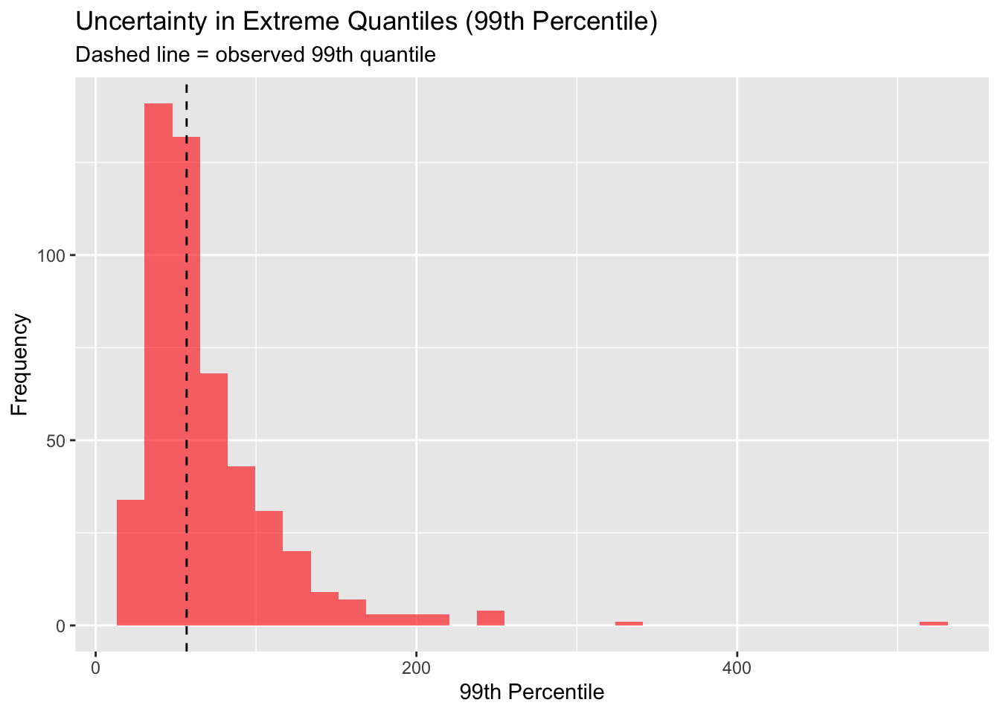

#1 Posterior Predctive Checks on Base Bayesian Model - Don River
Author
Dylan
Published
April 5, 2026
Load Observed Data and Bayesian Models
library(tidyverse)
── Attaching core tidyverse packages ──────────────────────── tidyverse 2.0.0 ──
✔ dplyr 1.1.4 ✔ readr 2.1.6
✔ forcats 1.0.1 ✔ stringr 1.6.0
✔ ggplot2 4.0.0 ✔ tibble 3.3.1
✔ lubridate 1.9.5 ✔ tidyr 1.3.1
✔ purrr 1.2.0
── Conflicts ────────────────────────────────────────── tidyverse_conflicts() ──
✖ dplyr::filter() masks stats::filter()
✖ dplyr::lag() masks stats::lag()
ℹ Use the conflicted package (<http://conflicted.r-lib.org/>) to force all conflicts to become errors
library(here)
here() starts at /Users/dylanthackeray/Documents/GitHub/toronto_flood_cat_model
library(evd)library(posterior)
This is posterior version 1.6.1
Attaching package: 'posterior'
The following objects are masked from 'package:stats':
mad, sd, var
The following objects are masked from 'package:base':
%in%, match
Rows: 54 Columns: 1
── Column specification ────────────────────────────────────────────────────────
Delimiter: ","
dbl (1): exceedance
ℹ Use `spec()` to retrieve the full column specification for this data.
ℹ Specify the column types or set `show_col_types = FALSE` to quiet this message.
Rows: 34 Columns: 2
── Column specification ────────────────────────────────────────────────────────
Delimiter: ","
dbl (2): year, n_events
ℹ Use `spec()` to retrieve the full column specification for this data.
ℹ Specify the column types or set `show_col_types = FALSE` to quiet this message.
The trace plots confirm that all parameters have converged and are well-sampled. However, the shape parameter ξ shows higher posterior variance, indicating that while the inference is computationally stable, tail behavior remains weakly identified.
Interpretation of Prior, Likelihood, and Posterior
The prior, likelihood, and posterior distributions illustrate how information is updated within the Bayesian framework.
The priors are intentionally weak, reflecting limited prior knowledge and allowing the data to drive inference. As a result, the posterior is primarily informed by the likelihood, indicating that the data is sufficiently informative for these parameters
For parameters such as λ (event frequency) and σ (scale), the likelihood is relatively concentrated, indicating that these parameters are well-identified by the data. Consequently, the posterior distributions closely align with the likelihood, with only minor influence from the prior.
In contrast, the shape parameter ξ exhibits greater uncertainty. The likelihood for ξ is relatively flat indicating weak identifiability, just like what the trace plots showed. As a result, the posterior remains wide and is more sensitive to prior assumptions.
This highlights a key challenge in extreme value modeling: while central behavior can be estimated reliably, tail behavior is inherently data-sparse and difficult to identify. The Bayesian framework makes this uncertainty explicit, rather than masking it through point estimates.
Simulate From Posterior
sim_counts <-c()sim_exceedances <-list()for(i in1:nrow(posterior_sample)) { lambda <- posterior_sample$lambda[i] sigma <- posterior_sample$sigma[i] xi <- posterior_sample$xi[i]# Simulate yearly event count N <-rpois(1, lambda) sim_counts <-c(sim_counts, N) #scale for density rather than the frequency. # Simulate exceedancesif(N >0) { X <-rgpd(N, loc =0, scale = sigma, shape = xi) sim_exceedances[[i]] <- X }}sim_exceedances <-unlist(sim_exceedances)
Frequency Plot (λ)
ggplot() +geom_histogram(aes(x = freq_df$n_events, y =after_stat(density)),fill ="blue", alpha =0.5, bins =10) +geom_histogram(aes(x = sim_counts, y =after_stat(density)),fill ="red", alpha =0.5, bins =10) +labs(title ="Observed vs Simulated Event Counts",subtitle ="red: Simulated Posterior Values | blue: Observed Values",x ="Number of Events per Year",y ="Frequency" )
Note: I was originally going to just do the histograms but I realized I needed to dive deeper into the tail region, where the simulated and observed posterior values weren’t matching up. So i dove deeper with a survival function comparison.
The survival function comparison shows strong agreement between observed and simulated data in the central region, indicating that the scale parameter (σ) is well-identified and accurately captures the typical magnitude of exceedances.
However, divergence in the upper tail reflects sensitivity to the shape parameter (ξ), which governs the rate of tail decay. The variability observed in the simulated tail arises from posterior uncertainty in ξ, rather than systematic bias, indicating that extreme behavior is weakly identified by the available data or my threshold choice.
# A tibble: 1 × 3
mean p95 max
<dbl> <dbl> <dbl>
1 13.4 42.2 68
sim_stats
# A tibble: 1 × 3
mean p95 max
<dbl> <dbl> <dbl>
1 14.4 42.9 188.
# Distribution of simulated 99th percentilesim_p99 <-replicate(500, { sample_data <-rgpd(n =length(exceedances),loc =0,scale =sample(posterior_sample$sigma, 1),shape =sample(posterior_sample$xi, 1) )quantile(sample_data, 0.99)})ggplot() +geom_histogram(aes(x = sim_p99), bins =30, fill ="red", alpha =0.6) +geom_vline(xintercept =quantile(exceedances, 0.99), linetype ="dashed") +labs(title ="Uncertainty in Extreme Quantiles (99th Percentile)",subtitle ="Dashed line = observed 99th quantile",x ="99th Percentile",y ="Frequency" )

The large difference in maximum values reflects the sensitivity of extreme outcomes to the shape parameter (ξ), rather than a failure of the model to reproduce observed data.
Summary
The posterior predictive checks demonstrate that while the model captures central behavior well, uncertainty in the shape parameter (ξ) leads to substantial variability in extreme outcomes, reflecting fundamental limits of inference under data sparsity rather than model misspecification.
Even small positive values of ξ imply a heavy-tailed distribution, meaning the model assigns non-negligible probability to extreme events beyond those observed historically. As a result, the model does not simply replicate past data, but represents a range of plausible future outcomes under the inferred process.
Importantly, the observed extreme values fall within high-density regions of the simulated posterior distribution, indicating that they are not unusual under the model. However, the posterior distribution remains wide, reflecting the fact that the available data provides limited information about tail behavior. ~ see numerical summary statistics header
Next Steps
To address the ξ parameter uncertainty, the next stage of development will focus on introducing additional structure and information into the model:
Improve tail estimation (ξ): Incorporate physically-informed priors and/or hierarchical structure (e.g., spatial pooling across locations) to better constrain tail behavior.
Move beyond stationarity: Extend the model to allow parameters to vary over time, linking frequency and severity to covariates such as rainfall and climate drivers.
Build a physical-economic pipeline: Develop a transformation from flow exceedance to economic loss through intermediate layers (e.g., flow -> water depth -> damage -> exposure), enabling meaningful risk quantification.
These extensions will allow the model to move from a statistically sound baseline toward a more realistic and decision-relevant flood risk framework.